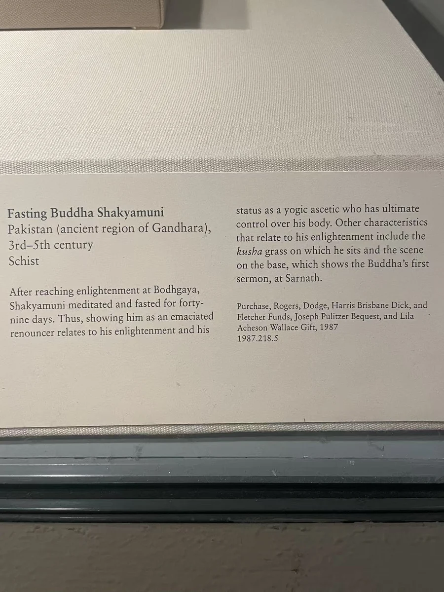

11 / 石上的一生
苦修的身体
当丰满的身体变为突出的肋骨。

头和四肢大部已经缺失，胸腹却仍然有很强的表现力。肋骨一根根突起，胸廓之下腹部向内收缩；皮肤仿佛只剩一层紧贴骨骼的表面。与前面马图拉坐佛充实的身体相比，这件残躯几乎走向另一个极端。充实与消瘦，是两种迥然不同的身体表达。
苦修像很容易被一概接到成道前的六年苦行故事上，但大都会本件的现行说明采用了另一解释：成道之后四十九日沉思、不进食的经历。馆方还把基座的小场面与初次说法联系起来。在这一解读中，瘦削的身体指向觉悟后的沉思。 [1]
近看时，重要的不只是瘦削本身，还有骨骼和衣料怎样共处。胸前几乎没有平缓的表面，断裂边缘又使身体的中断更加明显；下方相对紧密的衣线与座台，仍然维持雕像的正面秩序。残缺让我们不能再完整读取原来的姿态，却没有消除它以身体传达精神专注的力量。肋骨、腹部与衣线的对照，使修行成为了身体上的痕迹。
本篇作品
苦修佛残躯 · 1987.218.5
- 原题名
- Fasting Buddha Shakyamuni
- 年代
- 3—5世纪
- 材料
- 片岩
- 尺寸
- 高27.8厘米
- 编号
- 1987.218.5
- 收藏／展出
- 大都会艺术博物馆
- 地域关系
- 犍陀罗地区；具体原址未详
资料与来源
现场展签

